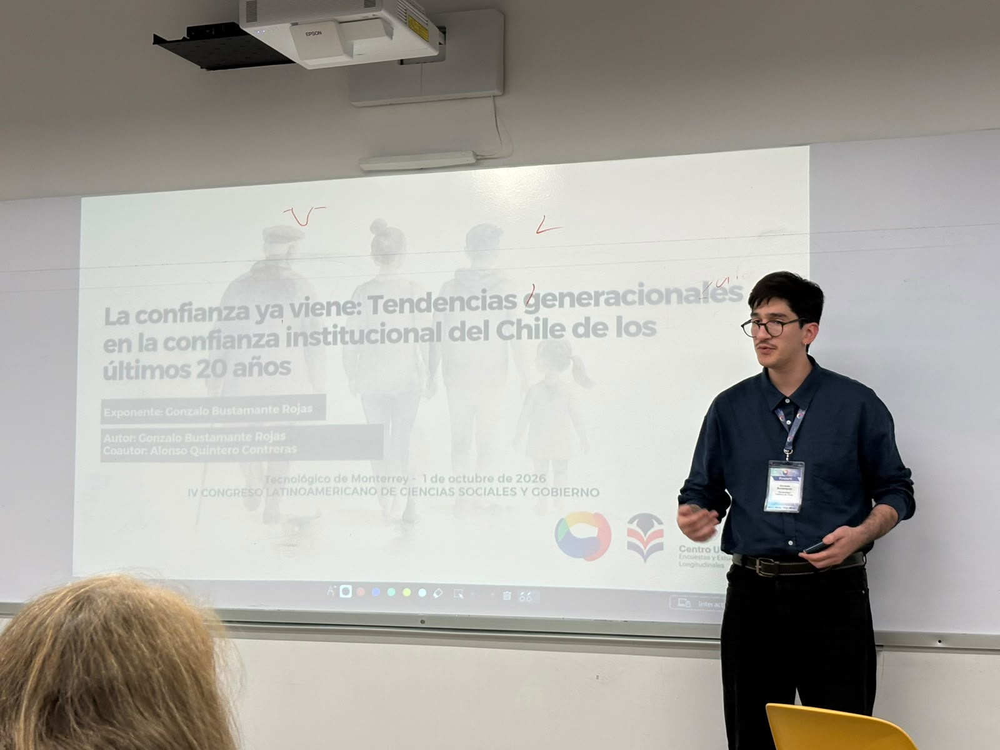
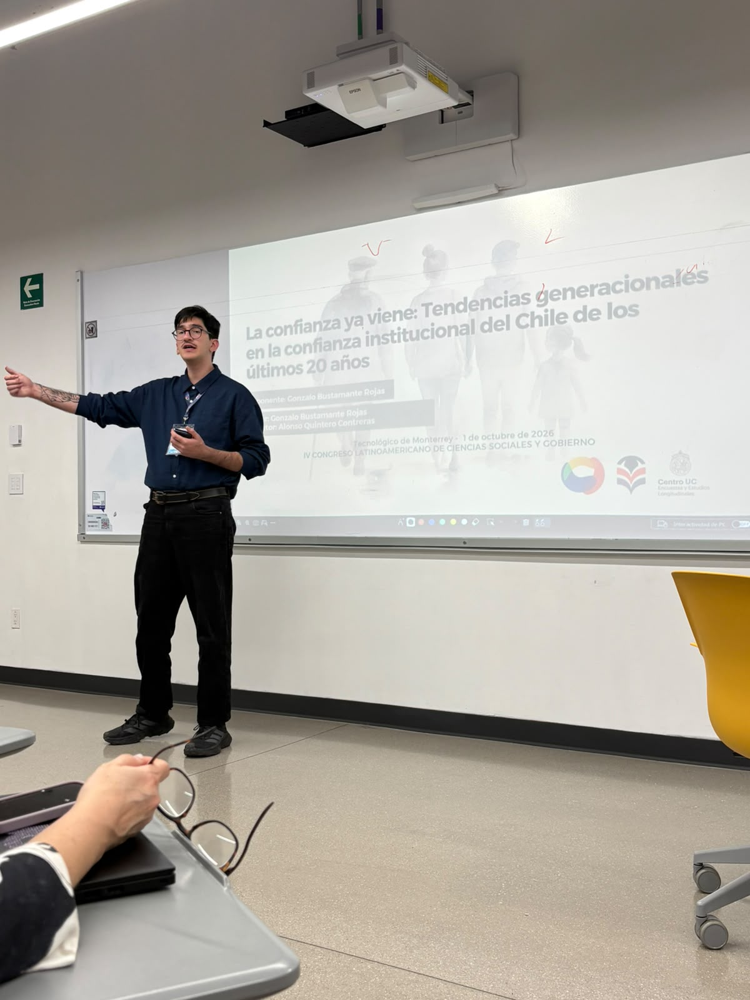
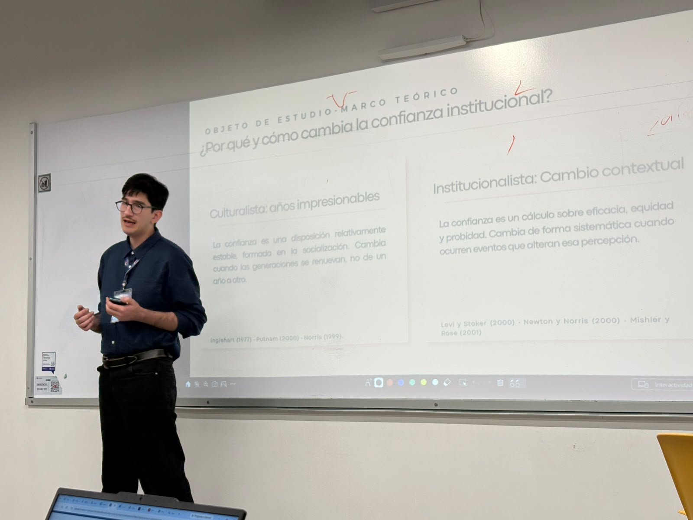
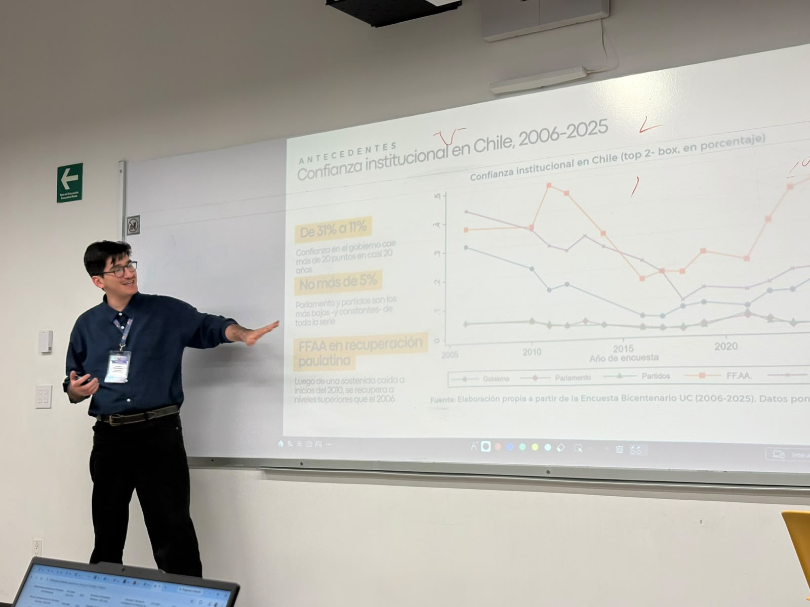

La confianza ya viene: Tendencias generacionales en la confianza institucional del Chile de los últimos 20 años
IV Congreso Latinoamericano de Ciencias Sociales y Gobierno, La Tríada 2026.




Presenté esta ponencia en el campus Ciudad de México del Tecnológico de Monterrey, dentro del eje temático Estado y emociones del congreso, que este año tuvo como lema "Construcción de Estado en América Latina".
El trabajo, escrito junto a Alonso Quintero Contreras, usa la Encuesta Bicentenario UC (2006-2025) para separar edad, período y cohorte en la confianza hacia el gobierno, el parlamento, los partidos, las FF.AA. y la Iglesia, y preguntarse si existe una ruptura generacional real en el Chile de las últimas dos décadas.
- Fecha1 de octubre de 2026
- LugarTecnológico de Monterrey, campus Ciudad de México
- EjeEstado y emociones
- AutoresGonzalo Bustamante Rojas, Alonso Quintero Contreras